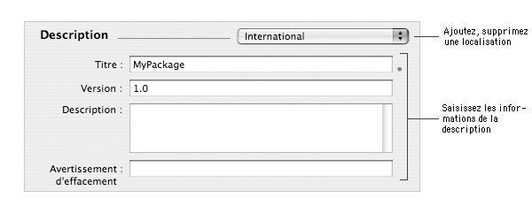
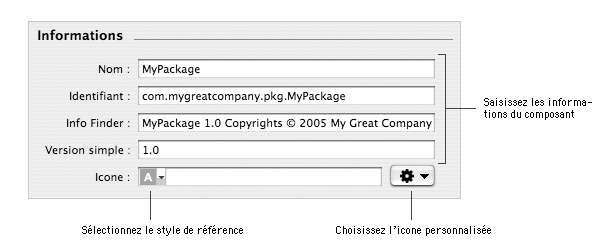
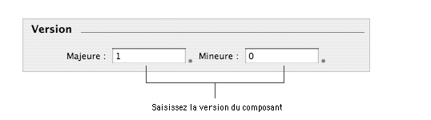
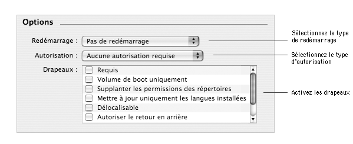

CHEMIN Table des matières > Configuration des composants
Configuration des composants
Lorsqu'un nouveau composant est créé, lors de la création du projet ou de l'ajout d'un composant
à un metapackage, des informations de présentation, de version et des options d'installation sont
positionnées par défaut. Ce document décrit ces différentes informations et vous explique comment les
personnaliser et les configurer.
Personnalisation de la description du composant
Les informations de la section Description sont utilisées par le Programme d'installation dans la fenêtre principale.

Voici la description des différents champs de cette section :
- Titre : cette information est utilisée par le Programme d'installation pour le titre de la fenêtre,
les titres de certaines étapes de l'installation et dans le cadre d'un metapackage pour le nom du composant dans le mode
installation personnalisée.
Par défaut, le titre est le nom du projet.
- Version : cette information n'est pas utilisée par le Programme d'installation et existe uniquement
pour des raisons (pré-)historiques.
Pour gérer les versions de composants, utilisez la section Version.
Par défaut, la version est 1.0.
- Description : cette information est utilisée par le Programme d'installation dans le mode d'installation
personnalisée pour la zone de description quand vous sélectionnez un composant dans la liste.
Par défaut, la description est vide.
- Avertissement d'effacement : cette information n'est pas utilisée par le Programme d'installation et existe uniquement
pour des raisons (pré-)historiques.
Par défaut, l'avertissement d'effacement est vide.
Ces informations peuvent être localisées. Par défaut, la description sera la même quelle que soit
la langue choisie par l'utilisateur. Pour que le Programme d'installation utilise une description localisé, il vous faudra ajouter des
descriptions localisés.
Pour personnaliser la description du composant :
| 1 | Sélectionnez le composant dans la colonne Packages et metapackages. |
| 2 | Choisissez Vue > Configurations. |
| 3 | Saisissez les informations que vous souhaitez dans les quatre
champs. |
Pour ajouter une localisation :
| 1 | Sélectionnez le composant dans la colonne Packages et metapackages. |
| 2 | Choisissez Vue > Configurations. |
| 3 | Cliquez sur le menu local localisation de la section Description et
choisissez Ajouter une localisation… . |
| 4 | Tapez le nom de la localisation (en Anglais) et cliquez sur Ajouter. |
| 5 | Saisissez les informations que vous souhaitez dans les quatre champs. |
Pour éditer une localisation :
| 1 | Sélectionnez le composant dans la colonne Packages et metapackages. |
| 2 | Choisissez Vue > Configurations. |
| 3 | Cliquez sur le menu local localisation de la section Introduction et
choisissez la langue de la localisation que vous souhaitez modifier. |
| 5 | Éditez les informations que vous souhaitez. |
Pour supprimer une localisation :
| 1 | Sélectionnez le composant dans la colonne Packages et metapackages. |
| 2 | Choisissez Vue > Configurations. |
| 3 | Cliquez sur le menu local localisation de la section Description et
choisissez la langue de la localisation que vous souhaitez supprimer.
|
Note :
La localisation International ne peut pas être supprimée. Si vous ne souhaitez pas utiliser la localisation International
car vous proposez des descriptions localisées, videz les champs de la localisation International.
|
|
|
| 4 | Cliquez sur le menu local localisation de la section Description et
choisissez Supprimer… . |
| 5 | Cliquez sur Supprimer |
Personnalisation des informations du composant
Les informations de la section Informations sont principalement utilisées par le Finder pour la fenêtre
"Lire les informations".

Voici la description des différents champs de cette section :
- Nom : cette information n'est pas utilisée par le Finder ou le Programme d'installation. Les
raisons de son existence sont inconnues actuellement.
Par défaut, le nom est celui du projet.
- Identifiant : cette information est l'identifiant du bundle du composant. Il est recommandé de respecter la convention
de nommage "Reverse-DNS" pour cette information. L'identifiant peut être utilisé par les
pré-requis d'installation pour définir un composant.
Par défaut, l'identifiant est construit à partir de la valeur
COMPANY_PACKAGE_IDENTIFIER et du nom du projet.
- Info Finder : cette information correspond à l'information Version de la fenêtre
"Lire les informations" du Finder.
Par défaut, l'info Finder est construite à partir de la valeur
COMPANY_NAME et du nom du projet.
- Version simple : cette information est affichée dans la colonne Version du mode de présentation
par liste du Finder.
Par défaut, la version est 1.0.
- Icone : cette information est le chemin absolu (ou relatif au projet) vers une icone devant remplacer
l'icone standard du composant.
Par défaut, cette information est vide (l'icone standard est utilisée).
Notes :
- La référence vers le fichier utilisé pour personnaliser l'icone du composant est par défaut
un chemin absolu. Il est possible de basculer vers un chemin relatif au projet en utilisant le menu local du champ d'édition.
- Le document décrit comment modifier la référence avec les dialogues standards d'ouverture de fichier.
Il est aussi possible de saisir directement le chemin dans le champ d'édition ou bien de glisser-déposer un fichier depuis le Finder
(sous réserve que le champ texte ne soit pas en cours d'édition).
- Si la référence pointe vers un fichier qui n'existe pas ou plus, le chemin sera affiché en rouge.
|
|
Pour personnaliser les informations du composant :
| 1 | Sélectionnez le composant dans la colonne Packages et metapackages. |
| 2 | Choisissez Vue > Configurations. |
| 3 | Saisissez les informations que vous souhaitez. |
Pour utiliser une icone personnalisée :
| 1 | Sélectionnez le composant dans la colonne Packages et metapackages. |
| 2 | Choisissez Vue > Configurations. |
| 3 | Cliquez sur le menu local Action de la section Informations. |
| 4 | Choisissez Choisir… . |
| 5 | Sélectionnez l'icone que vous souhaitez utiliser pour le composant.
|
Note : L'icone doit être au format suivant : icns.
|
|
|
| 6 | Cliquez sur Choisir. |
Configuration de la version du composant
Les informations de la section Version sont utilisées par le Programme d'installation pour connaître
la version d'un composant.
Le Programme d'installation peut ainsi savoir si un package plus ancien
que la version actuelle est sur le point d'être installé et empêcher l'installation si l'option
Autoriser le retour en arrière n'est pas activée. De même, sous Mac OS X 10.3 et ultérieur,
un composant marqué comme requis mais déjà présent sur la
machine cible deviendra déselectionnable si les versions sont identiques.

Voici la description des différents champs de cette section :
- Majeure : c'est la version majeure ou bien la partie entière de la version
Par défaut, la valeur vaut 1.
- Mineure : c'est la version mineur ou bien la partie décimale de la version
Par défaut, la valeur vaut 0.
Pour configurer la version du composant :
| 1 | Sélectionnez le composant dans la colonne Packages et metapackages. |
| 2 | Choisissez Vue > Configurations. |
| 3 | Saisissez la version majeure et mineure du composant dans la section Version. |
Sélection des options
La section Options n'est disponible que pour les packages. Ces options permettent de spécifier le comportement d'un package
avant, pendant et apréte l'installation.

L'option Redémarrage spécifie le comportement du Programme d'installation si l'installation du package
est un succès.
Cinq comportements sont possibles :
- Pas de redémarrage : à la fin de l'installation, l'utilisateur pourra quitter le
Programme d'installation. C'est le comportement par défaut.
- Redémarrage recommandé : à la fin de l'installation, l'utilisateur aura la possibilité
de redémarrer la machine via le Programme d'installation. Ce comportement est supporté par Mac OS X 10.2 et ultérieur.
- Redémarrage requis : à la fin de l'installation, l'utilisateur devra redémarrer
la machine via le Programme d'installation.
- Extinction requise : à la fin de l'installation, l'utilisateur devra éteindre
la machine via le Programme d'installation. Ce comportement est supporté par Mac OS X 10.2 et ultérieur.
- Logout requis : à la fin de l'installation, l'utilisateur devra se délogger via
le Programme d'installation. Ce comportement est supporté par Mac OS X 10.3 et ultérieur.
Important : le comportement sélectionné ne s'appliquera que si la destination de l'installation est le volume de
démarrage. Dans le cadre d'un metapackage comportant plusieurs packages, le comportement adopté sera le plus restrictif.
L'option Autorisation spécifie quel type d'utilisateur peut installer le package. Ceci a une influence sur l'identifiant
d'utilisateur qui sera utilisé
pour l'exécution des scripts d'installation et les emplacements où le package pourra installer ses fichiers.
Trois types d'autorisations sont disponibles :
- Aucune autorisation requise : aucune autorisation n'est requise pour installer le package. C'est le type d'autorisation par défaut. Les scripts
d'installation seront exécutés avec l'identifiant de l'utilisateur courant. Si la destination d'installation de certains fichiers requiert
des privilèges plus importants que ceux de l'utilisateur courant, l'installation échouera.
- Autorisation Administrateur : le Programme d'installation demandera à l'utilisateur courant de s'identifier avec
un compte administrateur s'il n'est pas administrateur lui-même. Les scripts d'installation seront exécutés
avec l'identifiant root. Si la destination d'installation de certains fichiers requiert
des privilèges plus importants (un dossier root:wheel par exemple), l'installation échouera.
|
Note : Dans la pratique, préférez l'autorisation root à l'autorisation administrateur.
Cela permet de contourner certains bugs des versions antérieures du Programme d'installation.
|
|
- Autorisation root : le Programme d'installation demandera à l'utilisateur courant de s'identifier avec
un compte administrateur. Les scripts d'installation seront exécutés
avec l'identifiant root.
|
| Autorisation |
Utilisateur |
Identification nécessaire |
Privilèges utilisés |
|
| Aucune autorisation requise |
Standard |
Non |
Utilisateur courant |
| Administrateur |
Non |
Administrateur |
| root |
Non |
root |
 |
| Autorisation Administrateur |
Standard |
Oui |
Administrateur |
| Administrateur |
Non |
Administrateur |
| root |
Non |
root |
|
| Autorisation root |
Standard |
Oui |
root |
| Administrateur |
Oui |
root |
| root |
Non |
root |
|
Les options de la catégorie Drapeaux spécifient le comportement du Programme d'installation
vis à vis du package lui-même et des fichiers installés par ce dernier. Les drapeaux sont
tous désactivés par défaut.
Huit drapeaux sont configurables :
- Requis : lorsque ce drapeau est activé, le package fera obligatoirement parti des
composants installés s'il est inclus dans un metapackage. Cependant, à partir de Mac OS X 10.3, si la
même version du package a déjà été installé sur la machine, il sera alors
délectionnable.
- Volume de boot uniquement : lorsque ce drapeau est activé, le package ou tout metapackage
incluant ce package ne pourra être installé que sur le volume de démarrage.
- Supplanter les permissions des répertoires : lorsque ce drapeau est activé, un dossier
présent à la fois sur le disque et dans le package prendra les permissions du dossier dans le package.
- Mettre à jour uniquement les langues installées : lorsque ce drapeau est activé et
qu'une ancienne version du package a déjà été installé, le
Programme d'installation ne mettra à jour que les localisations installées précédemment. Cela évite les localisations partielles.
- Délocalisable : lorsque ce drapeau est activé, le Programme d'installation
autorisera l'utilisateur à changer la destionation par défaut du package.
|
Important : Contrairement à ce que décrit la documentation Apple, il suffit
qu'un seul composant d'un metacpackage soit délocalisable pour que tous les composants le deviennent. Il s'agit
d'un bug présent de Mac OS X 10.2.8 à Mac OS X 10.3.3.
|
|
- Autoriser le retour en arrière : lorsque ce drapeau est activé, le Programme d'installation
autorisera l'installation du package même si une version postérieure est déjà installée.
- Suivre les liens symboliques : lorsque ce drapeau est activé et que le
Programme d'installation rencontre un fichier ou dossier qui est un lien symbolique, le lien symbolique sera résolu au
lieu d'être directement remplacé.
Note : Si vous installez des fichiers ou dossiers dans /etc par exemple, pensez à
activer ce drapeau car /etc est en fait un lien symbolique vers /private/etc.
|
|
Pour sélectionnez le type de redémarrage :
| 1 | Sélectionnez le package dans la colonne Packages et metapackages. |
| 2 | Choisissez Vue > Configurations. |
| 3 | Cliquez sur le menu local Redémarrage dans la section Options et sélectionnez le mode
que vous souhaitez. |
Pour sélectionnez le type d'autorisation :
| 1 | Sélectionnez le package dans la colonne Packages et metapackages. |
| 2 | Choisissez Vue > Configurations. |
| 3 | Cliquez sur le menu local Autorisation dans la section Options et sélectionnez le type
d'autorisation que vous souhaitez. |
Pour activer ou désactiver un drapeau :
| 1 | Sélectionnez le package dans la colonne Packages et metapackages. |
| 2 | Choisissez Vue > Configurations. |
| 3 | Cochez ou décochez la case correspondante de la liste Drapeaux dans la section Options. |
Auteur : Stéphane Sudre